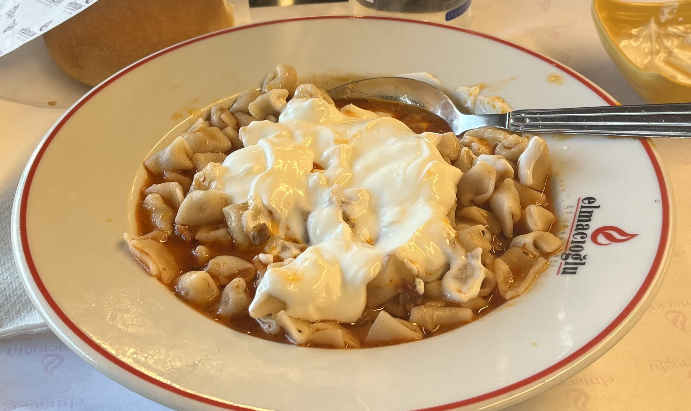

Manti
Description
Mati is a delicious Turkish dumpling dish filled with seasoned meat and topped with creamy yogurt and spiced butter. This simple yet flavorful dish is perfect for sharing and will quickly become a favorite at your table.
Ingredients
For the dough
- 2 cups flour
- 1/2 teaspoon salt
- 1/2 cup water
- 1 egg
For the filling
- 1/2 pound ground beef or lamb
- 1 small onion
- 1/2 teaspoon black pepper
- 1 teaspoon salt
For the topping
- 1 cup yogurt
- 2 cloves garlic
- 2 tablespoons butter
- 2 teaspoons tomato paste and red pepper
Steps
- Make the dough and filling – Mix flour, salt, egg, and water into a dough, then let it rest. Mix ground meat, onion, salt, and pepper for the filling.
- Shape and cook the dumplings – Roll out the dough, cut into small squares, fill with meat, and seal. Boil them in salted water for 8-10 minutes.
- Prepare toppings and serve – Mix yogurt with garlic, melt butter with tomato paste and red pepper flakes. Pour yogurt over the dumplings, then drizzle with the butter sauce. Enjoy!